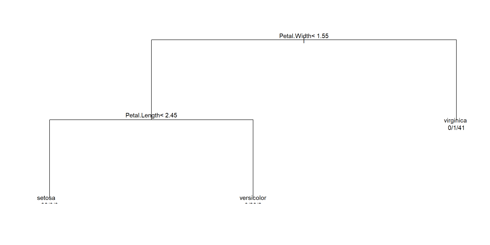

Machine learning often sounds like a different world from the statistics we have met so far. In truth, it is the same ideas wearing slightly different clothes. On this page we will build two classifiers — a decision tree and a random forest — to predict the species of an iris flower from its measurements. We will do everything twice: once in R and once in Python, so you can see how the two ecosystems tackle exactly the same problem.
The R code on this page actually runs. The Python code is shown for comparison only (it will not be executed when the site is built), so you can read it side by side and pick whichever language suits you.
What is supervised learning?
In supervised learning we have a set of input variables, called features (often written \(X\)), and an output variable we want to predict, called the label or target (often written \(y\)). We show the algorithm many examples where both \(X\) and \(y\) are known, and it learns a rule mapping \(X \to y\). We can then apply that rule to new cases where we only know \(X\).
There are two broad flavours:
Classification — the label is a category (e.g. which species of iris, spam vs not spam).
Regression — the label is a number (e.g. a house price, a temperature).
Our iris task is classification: the four measurements are the features, and the species is the label.
Code
```{r}###| The iris dataset is built into Rdata(iris)head(iris)```
The four feature columns are Sepal.Length, Sepal.Width, Petal.Length and Petal.Width; the label is Species.
Code
```{python}#| eval: false# The same dataset ships with scikit-learnfrom sklearn.datasets import load_irisimport pandas as pdirisBunch = load_iris(as_frame=True)X = irisBunch.data # the four measurements (features)y = irisBunch.target # the species, coded 0/1/2 (label)print(X.head())```
NoteIn a nutshell: features in, label out
Supervised learning learns a rule that turns features (\(X\), the things you measure) into a label (\(y\), the thing you want to predict). If the label is a category it is classification; if it is a number it is regression.
Splitting into training and test data
Here is the single most important habit in machine learning. We must never judge a model by how well it does on the data it was trained on. A model can look brilliant on data it has already seen and yet be useless on anything new — a bit like a student who has memorised the answers to last year’s exam.
To get an honest estimate of performance on unseen data, we hold some data back. We train on one portion (the training set) and then evaluate on a separate portion the model has never seen (the test set).
```{python}#| eval: falsefrom sklearn.model_selection import train_test_split# X and y come from the previous Python chunkxTrain, xTest, yTrain, yTest = train_test_split( X, y, test_size=0.3, random_state=2026)print(xTrain.shape, xTest.shape)```
NoteIn a nutshell: why hold data back
We split the data so we can measure performance on examples the model has never seen. Scoring a model on its own training data flatters it and tells you nothing about how it will behave in the real world.
A decision tree
A decision tree asks a sequence of yes/no questions about the features (“Is the petal longer than 2.5 cm?”) and follows the branches down to a predicted label. They are popular because the resulting rule is easy to read and explain.
In R we use the rpart package, which is recommended (it ships with R), so this chunk runs.
Code
```{r}###| Fit a decision tree on the training datalibrary(rpart)```
Warning: package 'rpart' was built under R version 4.4.3
Code
```{r}treeModel <-rpart(Species ~ ., data = trainData)###| Visualise the tree with base graphicsplot(treeModel)text(treeModel, use.n =TRUE, cex =0.9)```

Now we predict on the test set and measure accuracy with a confusion table (predicted versus actual):
Code
```{r}###| Predict the most likely class for each test flowertreePred <-predict(treeModel, newdata = testData, type ="class")###| Confusion table: rows = predicted, columns = actualconfusion <-table(Predicted = treePred, Actual = testData$Species)confusion###| Accuracy = proportion correct = sum of the diagonal / totaltreeAccuracy <-sum(diag(confusion)) /sum(confusion)treeAccuracy```
A single tree is easy to read but can be a little unstable. A random forest grows many trees on random subsets of the data and features, then lets them vote. The result is usually more accurate, at the cost of being harder to interpret — you can no longer point at one neat diagram.
The randomForest package is not one of R’s recommended packages, so the chunk below is marked #| eval: false; install it with install.packages("randomForest") to run it yourself.
Code
```{r}#| eval: falselibrary(randomForest)set.seed(2026)forestModel <-randomForest(Species ~ ., data = trainData)###| Predict and score on the test setforestPred <-predict(forestModel, newdata = testData)forestConfusion <-table(Predicted = forestPred, Actual = testData$Species)sum(diag(forestConfusion)) /sum(forestConfusion)###| Which features mattered most?importance(forestModel)```
A model overfits when it memorises the quirks and noise of the training data instead of the genuine pattern. It then scores brilliantly on the training set but poorly on new data. The test set exists precisely to catch this — if training accuracy is high but test accuracy is low, you are overfitting.
TipGoing further 🚀
A single train/test split can be lucky or unlucky. Cross-validation repeats the split many times and averages the results for a more reliable estimate — that is the subject of the next page.
To go deeper:
In R, the tidymodels and caret frameworks provide a tidy, consistent interface for splitting, resampling, tuning and comparing models.
In both languages, gradient boosting (via xgboost, available in R and Python, and lightgbm) often beats random forests on tabular data and is a staple of machine-learning competitions.
A note: you already know some machine learning
If linear models and logistic regression from earlier in the course feel familiar, that is no accident — they are supervised learning. A linear regression predicts a number (\(y\) continuous) and a logistic regression / GLM predicts a category (\(y\) discrete), each learning a rule from labelled examples, exactly as above.
What machine learning adds is (a) a wider toolbox of more flexible models, such as the trees and forests here, and (b) a stronger emphasis on prediction and validation — measuring honestly how well a model does on data it has never seen. The statistics you already have are the foundation; everything on this page builds on it.
Source Code
---title: "Supervised Learning: Classification"format: html: fig-width: 12 fig-height: 6 code-fold: show code-tools: true code-block-bg: true code-block-border-left: "#31BAE9" toc: true code-copy: true number_sections: true echo: fenced mathjax: trueengine: knitr---Machine learning often sounds like a different world from the statistics we have met so far. In truth, it is the same ideas wearing slightly different clothes. On this page we will build two classifiers — a decision tree and a random forest — to predict the species of an iris flower from its measurements. We will do everything **twice**: once in R and once in Python, so you can see how the two ecosystems tackle exactly the same problem.The R code on this page actually runs. The Python code is shown for comparison only (it will not be executed when the site is built), so you can read it side by side and pick whichever language suits you.# What is supervised learning?In **supervised learning** we have a set of input variables, called **features** (often written $X$), and an output variable we want to predict, called the **label** or **target** (often written $y$). We show the algorithm many examples where both $X$ and $y$ are known, and it learns a rule mapping $X \to y$. We can then apply that rule to new cases where we only know $X$.There are two broad flavours:- **Classification** — the label is a *category* (e.g. which species of iris, spam vs not spam).- **Regression** — the label is a *number* (e.g. a house price, a temperature).Our iris task is classification: the four measurements are the features, and the species is the label.```{r}###| The iris dataset is built into Rdata(iris)head(iris)```The four feature columns are `Sepal.Length`, `Sepal.Width`, `Petal.Length` and `Petal.Width`; the label is `Species`.```{python}#| eval: false# The same dataset ships with scikit-learnfrom sklearn.datasets import load_irisimport pandas as pdirisBunch = load_iris(as_frame=True)X = irisBunch.data # the four measurements (features)y = irisBunch.target # the species, coded 0/1/2 (label)print(X.head())```::: {.callout-note title="In a nutshell: features in, label out"}Supervised learning learns a rule that turns **features** ($X$, the things you measure) into a **label** ($y$, the thing you want to predict). If the label is a category it is *classification*; if it is a number it is *regression*.:::# Splitting into training and test dataHere is the single most important habit in machine learning. We must **never** judge a model by how well it does on the data it was trained on. A model can look brilliant on data it has already seen and yet be useless on anything new — a bit like a student who has memorised the answers to last year's exam.To get an honest estimate of performance on **unseen** data, we hold some data back. We **train** on one portion (the *training set*) and then evaluate on a separate portion the model has never seen (the *test set*).```{r}###| Reproducible random split: 70% train, 30% testset.seed(2026)nRows <-nrow(iris)trainIndex <-sample(seq_len(nRows), size =0.7* nRows)trainData <- iris[trainIndex, ]testData <- iris[-trainIndex, ]c(train =nrow(trainData), test =nrow(testData))``````{python}#| eval: falsefrom sklearn.model_selection import train_test_split# X and y come from the previous Python chunkxTrain, xTest, yTrain, yTest = train_test_split( X, y, test_size=0.3, random_state=2026)print(xTrain.shape, xTest.shape)```::: {.callout-note title="In a nutshell: why hold data back"}We split the data so we can measure performance on examples the model has **never seen**. Scoring a model on its own training data flatters it and tells you nothing about how it will behave in the real world.:::# A decision treeA **decision tree** asks a sequence of yes/no questions about the features ("Is the petal longer than 2.5 cm?") and follows the branches down to a predicted label. They are popular because the resulting rule is easy to read and explain.In R we use the `rpart` package, which is *recommended* (it ships with R), so this chunk runs.```{r}###| Fit a decision tree on the training datalibrary(rpart)treeModel <-rpart(Species ~ ., data = trainData)###| Visualise the tree with base graphicsplot(treeModel)text(treeModel, use.n =TRUE, cex =0.9)```Now we predict on the **test** set and measure accuracy with a confusion `table` (predicted versus actual):```{r}###| Predict the most likely class for each test flowertreePred <-predict(treeModel, newdata = testData, type ="class")###| Confusion table: rows = predicted, columns = actualconfusion <-table(Predicted = treePred, Actual = testData$Species)confusion###| Accuracy = proportion correct = sum of the diagonal / totaltreeAccuracy <-sum(diag(confusion)) /sum(confusion)treeAccuracy```The same workflow in Python uses scikit-learn:```{python}#| eval: falsefrom sklearn.tree import DecisionTreeClassifierfrom sklearn.metrics import accuracy_scoretreeModel = DecisionTreeClassifier(random_state=2026)treeModel.fit(xTrain, yTrain)treePred = treeModel.predict(xTest)print("Accuracy:", accuracy_score(yTest, treePred))```# A random forestA single tree is easy to read but can be a little unstable. A **random forest** grows *many* trees on random subsets of the data and features, then lets them vote. The result is usually more accurate, at the cost of being harder to interpret — you can no longer point at one neat diagram.The `randomForest` package is **not** one of R's recommended packages, so the chunk below is marked `#| eval: false`; install it with `install.packages("randomForest")` to run it yourself.```{r}#| eval: falselibrary(randomForest)set.seed(2026)forestModel <-randomForest(Species ~ ., data = trainData)###| Predict and score on the test setforestPred <-predict(forestModel, newdata = testData)forestConfusion <-table(Predicted = forestPred, Actual = testData$Species)sum(diag(forestConfusion)) /sum(forestConfusion)###| Which features mattered most?importance(forestModel)```And the Python equivalent:```{python}#| eval: falsefrom sklearn.ensemble import RandomForestClassifierfrom sklearn.metrics import accuracy_scoreforestModel = RandomForestClassifier(random_state=2026)forestModel.fit(xTrain, yTrain)forestPred = forestModel.predict(xTest)print("Accuracy:", accuracy_score(yTest, forestPred))print("Feature importances:", forestModel.feature_importances_)```# Overfitting and where to go next::: {.callout-note title="In a nutshell: overfitting"}A model **overfits** when it memorises the quirks and noise of the training data instead of the genuine pattern. It then scores brilliantly on the training set but poorly on new data. The test set exists precisely to catch this — if training accuracy is high but test accuracy is low, you are overfitting.:::::: {.callout-tip title="Going further 🚀"}A single train/test split can be lucky or unlucky. **Cross-validation** repeats the split many times and averages the results for a more reliable estimate — that is the subject of the next page.To go deeper:- In **R**, the `tidymodels` and `caret` frameworks provide a tidy, consistent interface for splitting, resampling, tuning and comparing models.- In **both languages**, **gradient boosting** (via `xgboost`, available in R and Python, and `lightgbm`) often beats random forests on tabular data and is a staple of machine-learning competitions.:::# A note: you already know some machine learningIf linear models and logistic regression from earlier in the course feel familiar, that is no accident — they **are** supervised learning. A linear regression predicts a number ($y$ continuous) and a logistic regression / GLM predicts a category ($y$ discrete), each learning a rule from labelled examples, exactly as above.What machine learning adds is (a) a wider toolbox of more *flexible* models, such as the trees and forests here, and (b) a stronger emphasis on **prediction and validation** — measuring honestly how well a model does on data it has never seen. The statistics you already have are the foundation; everything on this page builds on it.